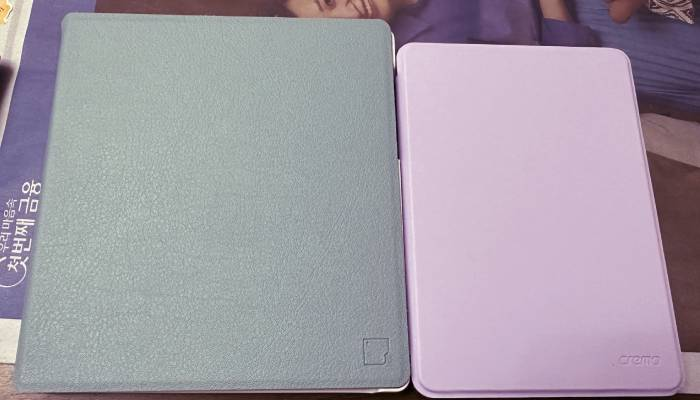
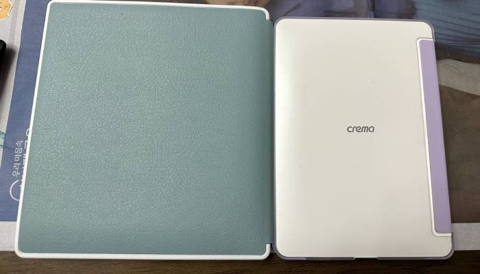
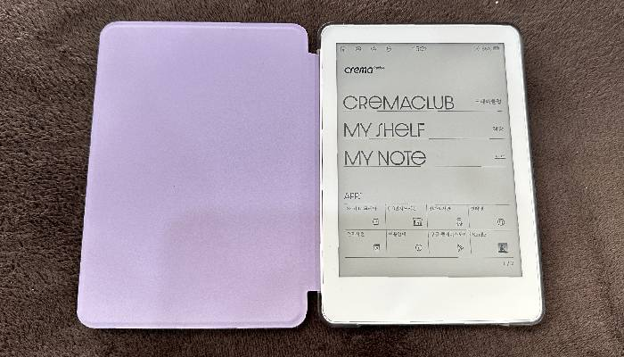

 한참 잊어먹고 있다가 2025년의 첫글을 이북리더로 시작해본다. 이것은 연말-새해 쯤에 부모님집에 갔을때인데, 엄마가 굉장히 오래 애용하던 누글삼, Nook Glowlight 3 을 리디전용기로 만든 모델이 이제 셀렉트등의 책도 사용하기 어렵게 되어서.. 엄마가 쓰기 편한 이북리더가 무엇일까 거진 일주일 넘게 고민하다가 찾은, 예전에 편하게 썼엇던 코보리더와 똑같이 생긴모델이 있길래 주문함. 배터리가 빨리 닳는다고 하는 평이 있었지만 화면이 크고, 엄마는 어차피 자기전에 보는 용도라서 좋은듯.  나는 예전에 쓰던 안드로이드 설치된 킨들이라거나 엄마가 쓰던 누글삼을 써도 괜찮긴한데, 킨들/코리더나 각종 국내서점, 도서관까지 편하게 사용하려는 생각과 단순한 기기욕심에 크레마 페블을 사봄. 정작 지금은 기존에 쓰던 안드로이드 오아시스라거나 이런거 쓰느라 많이 쓰고있진 않긴한데, 둘다 예쁜 기기라서 만족하는 중입니다. 해외에서 살면 애국자가 된다더니 한국회사에서 나온거 꼭 쓰고싶더라.. 